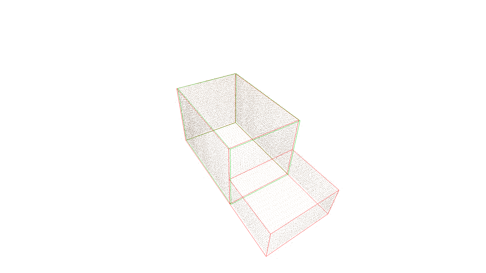
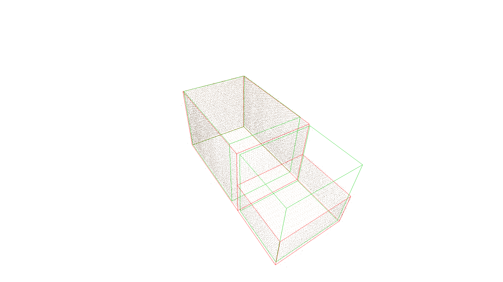
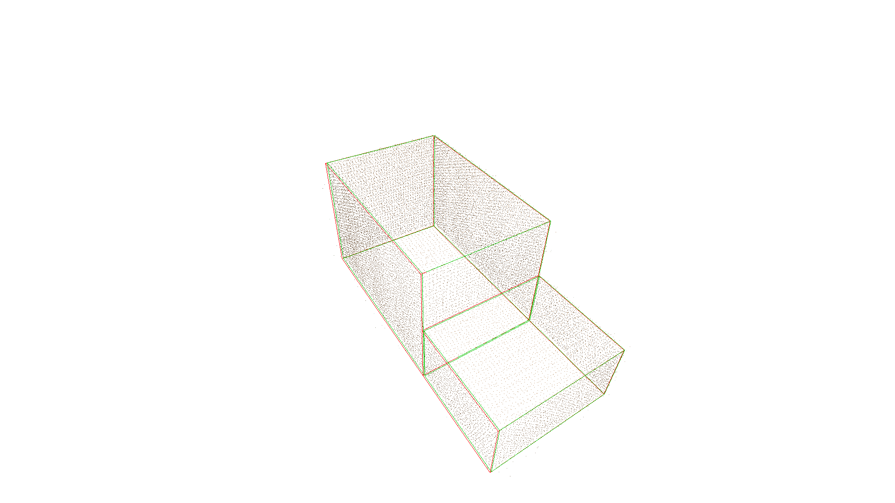
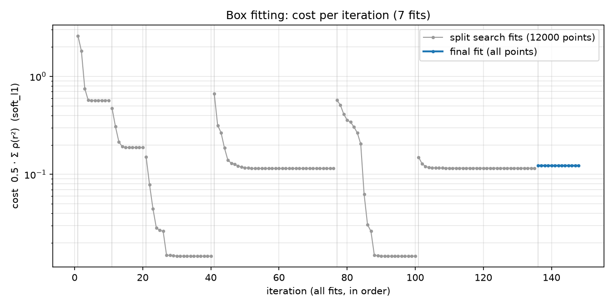
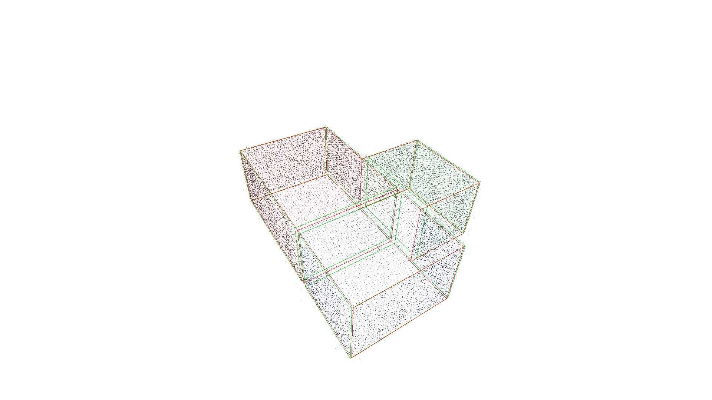
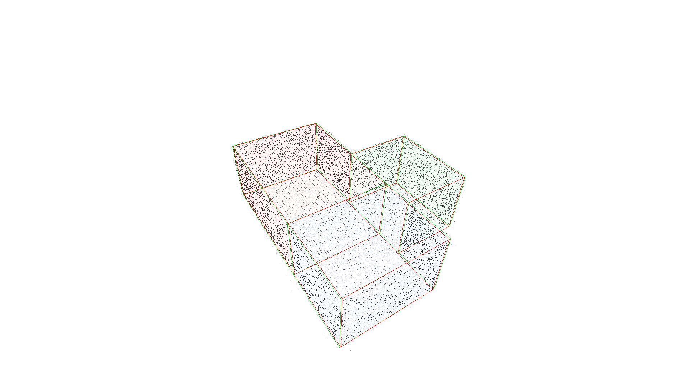
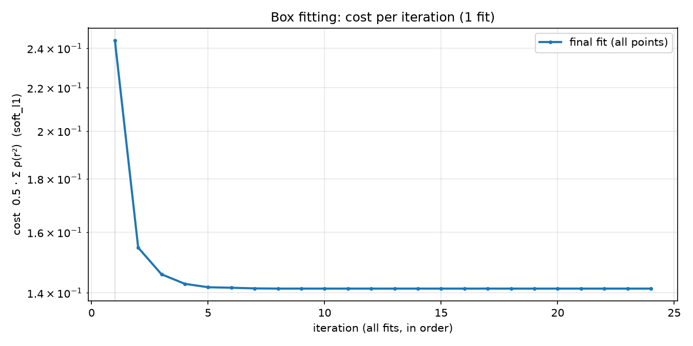

SAVIBoxes — How our pipeline works
What gw/main.py does, step by step, with the numbers we measured on the simulator scenes.
8 RGB-D point clouds
│
├─ Part 1 registration.py every camera aligned with camera 000
├─ Extra photometry.py every image's colours corrected to image 000
├─ Part 2 segmentation.py table, objects on it, split by colour when needed
└─ Part 3 bounding_box.py base method: one box per object
optimization.py main method: least-squares fit of all the boxes
→ result.jsonCommands
cd gw
./main.py --scene scenes/level_4 --num_boxes 3 # normal run, writes result.json
./main.py --scene scenes/level_4 --num_boxes 3 --show # all the 3D windows
./main.py --scene scenes/level_3_heights --num_boxes 2 --show_optimization # boxes moving + cost plot
./main.py --scene scenes/level_1 --num_boxes 1 --bbox open3d # base method as in the assignment
./main.py --scene scenes/level_1 --num_boxes 1 --bbox open3d_minimal
./main.py --scene scenes/level_4_exposure --num_boxes 3 --no_photometric # without the colour correctionPart 1 — Registration
Every point cloud is in the frame of the camera that took it. For each camera $i$ we look for $T_{0,i}$ (camera $i$ → camera 000):
- Initial estimate: FPFH features + RANSAC between camera $i$ and its neighbour $i-1$ (they overlap the most), chained: $T_{0,i} = T_{0,i-1}\,T_{i-1,i}$. RANSAC runs 5 times and every different answer is kept as a candidate. The last camera is also matched against camera 000, because the ring of cameras closes there.
- Refinement: point-to-plane ICP, coarse (4 cm) then fine (1 cm), against all the clouds already aligned. The candidate with the best ICP fitness wins.
- Refinement passes (3): every camera, camera 000 included, is aligned again against all the others; then every pose is re-expressed in the new camera-000 frame, $T_i \leftarrow T_0^{-1} T_i$.
Why the two fixes: in two scenes RANSAC 007 → 006 only gave wrong answers (~1 m slides) while 007 → 000 was right every time; and when camera 000 never moved, cameras 1–7 agreed with each other but the whole group stayed ~0.4° rotated with respect to 000 (the error grew with the distance to camera 000).
| Scene | Before the fixes | Now |
|---|---|---|
| level_1 | 5.9 mm / 0.26° | 3.1 mm / 0.10° |
| level_2 | 7.1 mm / 0.40° | 3.0 mm / 0.16° |
| level_3_heights | 100 mm (camera 007 lost) | 3.6 mm / 0.13° |
| level_3_stacked | 120 mm (camera 007 lost) | 4.4 mm / 0.19° |
| level_4 | 8.3 mm / 0.36° | 2.7 mm / 0.08° |
Mean over the cameras, against the ground truth.
Extra — Photometric correction
With automatic exposure (simulator option --exposure_changes) every image has its own gain and bias, the same for R, G and B: $c_i = s_i\,c + b_i$. The same box looks brighter in one image and darker in another, so the colours of the aggregated cloud disagree.
We estimate every image relative to image 000: $c_i = s_{i0}\,c_0 + b_{i0}$, with $s_{i0} = s_i / s_0$ and $b_{i0} = b_i - s_{i0}\,b_0$, and correct it with $\hat c_i = (c_i - b_{i0}) / s_{i0}$.
- Data: after the registration, two points of different cameras closer than 5 mm are the same surface (10 mm voxels, up to 3000 pairs per camera pair).
- Residual (one per pair and channel), image $j$ mapped into image $i$ and compared in image $i$'s raw colours: $\;c_i - \big[\tfrac{s_{i0}}{s_{j0}}(c_j - b_{j0}) + b_{i0}\big]$. Comparing the corrected colours instead, $(c_i - b_i)/s_i - (c_j - b_j)/s_j$, rewards a bigger $s$ (dividing by $s$ shrinks every difference): it gave $s \approx 1.03$ on a scene with no exposure changes at all.
- Image 000 fixed at $s = 1, b = 0$: with every image free the solution is not unique (Parte 06, ex. 2).
- Colours near 0 or 1 (clipped by the camera) are left out;
soft_l1for the pairs on colour edges.
It runs by default (about 1.5 s); on scenes without exposure changes it estimates $s \approx 1$, $b \approx 0$ and changes nothing.
| image | s (ours) | s (true) | b (ours) | b (true) |
|---|---|---|---|---|
| 001 | 1.025 | 1.027 | +0.017 | +0.016 |
| 002 | 0.779 | 0.779 | +0.009 | +0.007 |
| 003 | 0.933 | 0.935 | −0.022 | −0.024 |
| 004 | 0.917 | 0.921 | −0.081 | −0.084 |
| 005 | 0.979 | 0.983 | −0.043 | −0.047 |
| 006 | 0.968 | 0.973 | −0.045 | −0.049 |
| 007 | 1.129 | 1.179 | +0.061 | +0.044 |
level_4 with exposure changes, full pipeline. Image 007 only overlaps images 006 and 000 on surfaces with a narrow range of colours; there a bigger $s$ with a smaller $b$ predicts almost the same colours (the two lines cross at $c \approx 0.33$), so $s$ and $b$ cannot be separated well, although the corrected colours are right.
| level_4 with exposure changes | Points with no clear colour | Segmentation recall (3 boxes) | Optimization IoU |
|---|---|---|---|
| without correction | 16.0 % | 0.70 / 0.91 / 0.80 | 0.953 |
| with correction | 2.9 % | 0.92 / 0.91 / 0.91 | 0.957 |
The IoU hardly changes because the colour split uses chromaticity (which ignores the gain) and the optimization weighs colour weakly; the correction mostly gives the segmentation its points back.
Part 2 — Segmentation
- Table plane: RANSAC (
segment_plane) finds several planes; the table is the horizontal one, big enough not to be a box top, that the optical axis of camera 000 hits first (the floor is behind it). The plane is refitted a few times by least squares (SVD) on the biggest cluster of its inliers. - Table frame: origin at the centre of the table top, z up, x along the long side (
cv2.minAreaRect). - Crop: points more than 8 mm above the table and inside its limits.
- Euclidean clustering: DBSCAN (
cluster_dbscan, eps 1.5 cm). - Colour split (level 4): touching boxes of different colours form one cluster. In chromaticity $(r, g) = (R, G)/(R+G+B)$, which removes the brightness (top and sides of a box are lit differently), each colour is a peak of the 2D histogram. Real colours hold 2–9 % of the cluster's points in their peak bin, the mixed colours at the seams 0.01 %, so a 0.3 % threshold separates them. Every point takes the nearest peak (if closer than 0.06) and each colour group is clustered again. A cluster with one colour is left as it is, so levels 1–3 do not change.
Part 3 — Base method: bounding boxes
The assignment asks for a base method to compare against: "how far we get without the optimization". We have two, chosen with --bbox.
The assignment's: Open3D oriented bounding box (--bbox open3d, --bbox open3d_minimal)
- Statistical outlier removal (20 neighbours, 2 σ), to be fair to the method.
- In the table frame,
get_oriented_bounding_box()(axes from PCA of the convex hull) orget_minimal_oriented_bounding_box()(the orientation with the smallest volume). - Conversion to our convention (z up): the OBB axis closest to the table normal becomes the height, the other two the length and width, and the yaw is the direction of the length axis seen from above. If the box rests on the table, its base is moved down to the table (the segmentation removed the first 8 mm).
It encloses the points, so each face is set by the most extreme points: one flying pixel that survives the outlier removal grows the box. With PCA the axes also follow how the points are spread, not the faces of the box, so the box comes out rotated and too big; and if the OBB is tilted, the conversion to a z-up box is not exact.
Ours: the box from its planes (--bbox planes, the default)
All in the table frame, with the normal of every point (radius 1 cm):
| Parameter | How | Points used |
|---|---|---|
| top | peak of the histogram of the heights, in the top 3 cm, then the median within 4 mm of it | vertical normal ($\lvert n_z\rvert > 0.95$) |
| yaw | the walls' normals are at yaw + k·90°, so with their angles $\theta$: $\text{yaw} = \tfrac14 \arg\sum e^{4i\theta}$; a second pass drops normals more than 10° off | horizontal normal ($\lvert n_z\rvert < 0.3$), away from the top and bottom edges |
| each of the 4 walls | median position, along the wall's normal, of the points facing that way on that side; with fewer than 30, the 1st / 99th percentile | $\lvert n \cdot \text{axis}\rvert > 0.8$ |
| bottom | the table (0) if lower than 2 cm, otherwise the 1st percentile | all |
Each face comes from the median of a whole face, not from extreme points, so noise and flying pixels barely move it. It is very close to a geometric fit already, and it is the initial estimate of the optimization (whatever --bbox says).
Comparison (3D IoU, same segmentation and camera poses)
| Scene | Open3D OBB | Open3D minimal OBB | Ours (planes) | Optimization |
|---|---|---|---|---|
| level_1 | 0.707 | 0.902 | 0.977 | 0.977 |
| level_2 | 0.603 | 0.886 | 0.985 | 0.984 |
| level_3_aligned | 0.271 | 0.312 | 0.336 | 0.632 |
| level_3_heights | 0.278 | 0.303 | 0.484 | 0.976 |
| level_3_rotated | 0.190 | 0.201 | 0.279 | 0.977 |
| level_3_widths | 0.224 | 0.284 | 0.309 | 0.967 |
| level_3_stacked | 0.601 | 0.898 | 0.974 | 0.972 |
| level_4 | 0.498 | 0.894 | 0.913 | 0.966 |
- Against the assignment's box, the optimization gains 0.07–0.38 IoU on levels 1–2.
- Against ours it gains nothing on levels 1–2: one box per cluster and clean faces leave the optimization nothing to correct.
- On level 3 every bounding box fails: there is one cluster for two boxes. Only the optimization splits it.
- level_3_aligned (same colour, same width and height, flush) is impossible: the seam between the two boxes cannot be seen, so any split explains the points equally well.
Part 3 — Main method: least-squares fit
Every box has 7 parameters in the table frame, $(x, y, z, \text{yaw}, L, W, H)$; all the boxes are fitted together with scipy.optimize.least_squares (soft_l1, scale 1 cm). Residuals:
- Point → box: every point's distance to the surface of the box that explains it best. The association is recomputed in every evaluation (no outer loop): the closest box or, with colour (below), the box that best explains position and colour.
- Face support (box → points): 6×6 samples on every face; each should have a point near it, unless the face cannot be seen (on the table, or touching / covered by another box). Without it a box can grow over empty space at no cost: on level_4 three thin slabs covering the whole footprint won (IoU 0.142); with it, 0.683 without colour.
- Overlap: the penetration depth between every two boxes (separating axis theorem).
- Size: a small pull on $L + W$.
- Colour (level 4): a point pays $\tfrac{\sigma_g}{\sigma_c}\,\lVert c - c_k\rVert$ for a colour different from its box's, with $\sigma_g = 2$ mm and $\sigma_c = 0.15$: a full colour mismatch costs like a 6 mm distance, enough to place the seam between two flush boxes, too little to pull a point off the surface it is on. With $\sigma_c = 0.015$ (the colour noise), 20–30 % wrong colours dropped the IoU to 0.63; with 0.15 it stays at 0.966.
Split search: when a cluster has fewer boxes than --num_boxes, boxes are added one at a time; each time a few candidates are tried (a new box on the unexplained points, trimming the box that covers them, splitting a box in two, horizontally or in height) and the one with the lowest cost wins.
Level 4: the three approaches, with wrong colours
| 0 % | 10 % | 20 % | 30 % | |
|---|---|---|---|---|
| 1. split by colour → bounding box | 0.913 | 0.919 | 0.819 | 0.463 |
| 2. split by colour → fit each box (fixed association) | 0.966 | 0.963 | 0.640 | 0.243 |
| 3. colour in the objective | 0.966 | 0.966 | 0.642 | 0.462 |
| geometry only (no colour in the objective) | 0.959 | 0.959 | 0.561 | 0.253 |
level_4; a fraction of the points above the table gets the colour of another box before the segmentation. With 20–30 % wrong colours what fails is the initial estimate (the colour groups); started from clean boxes, approach 3 stays at 0.965.
The boxes during the optimization
--show_optimization (or --show) draws the boxes after every iteration (the callback of least_squares): green = current, red = true. After the window is closed it plots the cost against the iteration and saves optimization_cost.png next to result.json.






